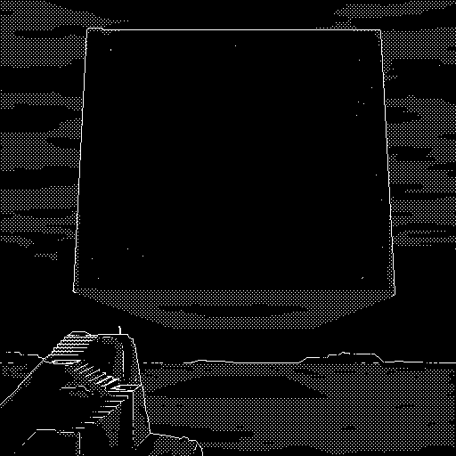

andeutung eines weltuntergangs johannes hassenstein
ANFANG
einmal die äh - fuck warte - 3 glaube ich der bus der blaue also weiße also weiße mit blauem dach das einzige auto halt
3
3 genau - nimmst du karte
ne
fuck - was macht das
guckst du nicht wenn du tankst
ne ich mach immer voll - weißt du viele menschen tanken immer ein bisschen und tanken wenn leer ist aber ich tank immer voll das kostet genau das gleiche man muss nur einmal damit anfangen aber man hat dann immer einen vollen tank
wenn man mal schnell weit weg will
wenn man mal schell weit weg will
du hast also nicht geguckt
ne
18 und ein bisschen - wie viel hast du?
bist du 18 und ein bisschen
danke
wieso danke
das war ironie
okay - aber bist du 18
kostet 18 20 wenn du es genau wissen willst
lenk nicht ab bist du 18
wie viel hast du
nicht genug wenn du nicht 18 bist
ja
wie ja
ja ich bin 18 wie viel hast du jetzt?
warum
weil du getankt hast da zahlt man normalerweise
nicht wenn man gut aussieht
deswegen zahlst du ja
hm
ja - hm
ich hab - 20 22 22 40
das reicht doch
nicht wenn ich dich noch einlade
für 4 40
besser als nicht eingeladen zu werden
ich kann selber zahlen
das heißt wir gehen aus
das habe ich nicht gesagt
aber du hast nicht nein gesagt
nein
also 18
ja
war das ein ja
ja - wo willst du mich denn für 4 40 einladen
wann hast du feierabend
um 6
also 18 uhr
-
kann ja auch 6 morgens sein - was kosten 2 brezeln und 2 bier
7 - 60
scheiß tankenpreise
du wolltest mich ja einladen
was kosten 2 brezeln und 2 bier nach 18 uhr
das gleiche ich zahl selber
oder nur bier
sehr romantisch 4 20
passt doch
plus pfand
kannst ja wieder mitnehmen
das ist kein pfandautomat hier
bei mir um die ecke ist einer
wer hat den gesagt das wir zu dir gehen
niemand ich sagte nur das bei mir um die ecke einer ist -
ich hab um 6 feierabend
schön um 6
18 uhr
für 2 bitte
setzt euch einfach alles frei
willst du ans fenster - bank oder stuhl
bank rücken zum fenster
bier oder wein
korn meistens hier ouzo - guck da ist ein sprachkurs auf der serviette - warst du schonmal woanders so woanders anders richtig draussen mit dem bus
noch nicht aber bald du
nie - nur einmal da war ich klein polen zigaretten schmuggeln glaube ich wüsste nicht was mein vater da sonst wollen würde in polen - in polen sieht es aus wie hier also eigentlich war ich nie woanders immer nur hier - schnaps ist gut aber erst nach dem essen
was nehmen wir
ich nehm hier immer gyrosteller mit doppelt tzaziki
haben wir heute nichts mehr vor
das ergibt sich schon
es ergibt sich
von ganz alleine
auch mit tzaziki wenn wir es wirklich wollen
-
kennst du lustige fakten irgendwas spannendes in deinem leben oder einfach so
bestimmt - lass mich überlegen
äh - wusstest du wusstest du zum beispiel dass dass man das erste schwarze loch entdeckt hat bevor es drucker gab oder plotter weißt du was ein plotter ist also der malt im prinzip einfach nur kleine punkte an bestimmten stellen und an welchen stellen das steht in einer datei als man das erste schwarze loch gefunden hat haben sie ein foto gemacht aber das foto war nur eine plotterdatei also einfach nur anweisungen wo man punkte hinmalen muss damit man das schwarze loch sehen kann es gab also einen menschen der monatelang kleine schwarze punkte gemalt hat bis man das schwarze loch sehen kann ich hab gedacht es wäre wohl schlauer gewesen auf einem schwarzen blatt nur da weiße punkte zu malen wo kein schwarzes loch ist weißt du wenn ich über sowas nachdenke fühle ich mich immer ganz klein schwarze löcher ein universum dass sich ausdehnt und wieder zusammenfällt so so werden wir alle mal sterben also energie liegt in verschiedenen formen vor und manche formen lassen sich in andere formen umwandeln also lageenergie wenn etwas irgendwo drauf steht in kinetische energie wenn es runterfällt und ein ganz bisschen davon wird auch wärme wegen der reibung weißt du wir haben nämlich immer reibung und diese wärme die lässt sich in nichts mehr zurück verwandeln alles was passiert erzeugt immer mehr wärme und das universum dehnt sich nur so lange aus wie es etwas auseinanderdrückt wenn alles wärme ist dann fällt das universum zusammen in einen kleinen schwarzen punkt und dort ist dann alles zu einem einzigen punkt von unglaublich großer maße fusioniert wie ein schwarzes loch und von da aus ist dann wieder ganz viel energie da die alles auseinander treibt und dann bilden sich helium und wasserstoff und fusionieren zu mehr elementen und planeten und lebewesen alles ganz zufällig immer wieder fällt das universum zusammen und entsteht neu wie du einatmest und wieder ausatmest so lebt das universum weißt du ich glaube das ist das worauf alle religion aller glaube abziehlt wissenschaft erklärt das wie aber glaube sucht das warum ich glaube wir sollen sowas nicht verstehen dazu sind wir nicht gedacht das ist wie eine ganz dünne membran durch die man verschwommen erahnen kann was dahinter ist und du kannst es ein wenig berühren leicht durch die membran fühlen welche form es haben muss aber du kannst nicht durch die membran alles was dahinter ist das bleibt ein vager formloser schatten man kann es nicht verstehen weil man es nicht verstehen soll aber es ist ein schöner gedanke machst du dir nicht manchmal manchmal sorgen dass wenn du morgen stirbst du nichts erreicht hast was von bedeutung ist ich habe angst zu sterben bevor all die dinge die ich tuen kann getan sind wir werden nichts zurück lassen weißt du außer den strahlenden müll der akws man fragt sich wie wir die kinder unser kinder die menschen die mal sein werden warnen können vor dem müll der strahlt man meint es würde sinn machen katzen so zu züchten dass sie leuchten blau leuchten wenn strahlung in der nähe ist und das wissen als sage der alten von mund zu mund weiterzugeben nur so wird es alle sprachen überdauern von generation zu generation weitergegeben das wissen von den blauen katzen die schlimmes unglück bringen das ist wirklich das beste was uns einfällt da beruhigt es mich zu wissen dass alles hier zufall und am ende wärme eine gemütliche wärme in der selbst das monumentalste zu einheitlichkeit und durchschnitt zerläuft weißt du die dinge die existieren nur im wiederspruch bewegung gibt es nur durch stillstand wärme nur durch kälte größe nur durch das kleine der mensch definiert alles relativ zu anderen dingen nichts kann er einfach für sich sein lassen allem müssen wir namen geben wer weiß was da draussen noch alles ist ob man alles benennen kann ob worte dafür reichen werden wir sehen ja nur vergangenheit licht ist schnell aber nicht sofort da alles braucht seine zeit und auf der großen skala ist unsere zeit sehr kurz wenn wir jetzt einen planeten sehen und da ist leben dann ist das leben bestimmt schon wieder weg oder etwas ganz anderes wenn wir dahin fliegen aber das geht gar nicht weisst du das ist auch sehr beruhigend man kann zivilisation in stufen einteilen nach dem energieverbrauch wir sind zum beispiel fast stufe 1 also energieverbrauch eines planeten aber dauerhaft also ohne fossile brennstoffe sondern nur erneuerbar das wäre dann richtig stufe 1 stufe 2 ist dann ein sonnensystem und stufe 3 alles darüber hinaus um von einer in die andere stufe zu kommen muss man bestimmte bedingungen erfüllen sonst wäre der technische fortschritt nicht möglich für stufe 1 zum beispiel das konzept von krieg verwerfen deswegen werden uns auch nie die aliens angreifen wenn sie zu uns fliegen können wollen sie gar keinen krieg mehr für stufe 2 das individuum und das eigene leben als maß der dinge ablegen weißt du um die ganze energie einer sonne zu nutzen müsste man eine riesen kugel aus solarpanelen um die sonne bauen sonst geht zu viel strom verloren um diese riesenkugel zu bauen braucht man aber ganz viel energie auf einmal ungefähr so viel wie eine sonne erzeugt deswegen baut man erst eine solarzelle und schickt die hin mit der energie dann die zweite damit dann vier dann acht dann sechszehn wie das schachbrett mit dem reis aber das dauert länger als ein menschenleben wenn wir eines tages die energie der sonne nutzen wollen müssen wir jetzt damit anfangen es wird uns jetzt nichts bringen also wird niemals jemand anfangen weil man selber nichts davon hat man muss selbstlos sein danach sucht man übrigens nach diesen kugeln die verdunkeln die sonne also den stern und alle sterne sind gleich hell wenn ein stern also etwas dunkler ist weiß man dass da eine kugel drum gebaut wurde und dass da leben ist aber eine fertige kugel würde man gar nicht mehr sehen und eine halbfertige kugel wäre gruselig weil wieso ist sie nicht fertig was hat eine zivilisation an diesem punkt aufgehalten warum haben sie nicht weiter gebaut was lauert da
zweimal gyrosteller und - viermal tzaziki - uozo ist aufs haus
wir teilen einfach
stell in die mitte
(ein feld)
(das hinter feldern liegt)
ich glaube die bauleuchten da sind eine landebahn
für
für drogenjets
für drogenjets sicher - hier wohnen doch nicht genug dass das lohnt - lohnt drogen im jet zu bringen
muss ja niemand nur verkaufen - wir sind brandenburg hallo
tschechien
pseudoephedrin wick
medinait bayer
aspirin
oder snickers die sind immer aus
oder hobbyflieger
wer hat denn die fucking zeit hobbyzufliegen
hier hat niemand hobbys
oder zeit
nur schichtarbeit und nichtmal davon genug
hier hat man nur große hunde viele kinder ausgebleichte klamotten vom primark berlin vertrockneten rasen kohlgeruch fliesentisch
es wird dunkel die nacht wird schwarz hinter den feldern der wald aus fichten hinter den fichten die hütten in den hütten die menschen an den menschen die handschuhe wenn die menschen nicht aufpassen stecken bald geschmolzene schlüssel in den schlössern der hütten mit den mensch noch darin auf dem feld die bauleuchten in zwei langen reihen schwarz diese nacht uns ist kalt erst ein brummen wie überlandleitung genau fünfzig hertz dann ein motor dann ein flugzeug es landet nicht aus dem himmel stürzt ein paket auf das feld
ein päckchen bleibt dort liegen zwischen den bauleuchten ein kleiner würfel
eingewickelt in wasserdichtes ductape
ein kleiner schwarzer würfel
steht auf dem feld
wir werden das paket suchen öffnen mitnehmen probieren angst bekommen ins klo schütten wochen später werde ich in die ecke gedrängt sein
man wird mich fragen wo das paket ist der kleine schwarze würfel ich werde sagen
welches paket
blutiges kinn stirn knie niere leberhaken
welches paket
schienbein kehlkopf schläfe
wir werden geld brauchen und wissen dass in der kasse in der tankstelle in der du arbeitest viel geld sein wird werden vollgetankt haben schnell ganz weit weg wollen
du wirst auf der sitzbank sitzen knien lehnen keine gute haltung finden da irgendwie rumlungern halb angeschnallt auf der sitzdecke mit dem muster wir werden erst wieder in bayern tanken dann in der schweiz
ich werde die nacht durch fahren bis wird in italien sind
italien im sommer wir werden kein geld mehr haben
nackt baden im stausee
vor touristen nackt baden
am privatstrand
an der cote d azur
uns von polizist*inn*en beschimpfen lassen auf französisch
ich werde sagen dass ich hier mal eine yacht haben will geld haben will anzüge haben will uhren haben will wohnungen haben will geschmack haben will alles haben will
das leben ist so fucking kurz
nur einmal nur ein einziges mal geschenkt
diese welt
diese beschissene komplexe unfaire welt
ist was wir gemeinsam draus aus diesem geschenk
da kann man nichts machen das kann man nicht reparieren
das ist idealismus blinder idealismus
da kann man sich auch einfach einen anzug kaufen geld haben alles kaufen können
wir werden uns streiten uns vertragen kinder haben wollen nie kinder haben werden
ich werde in einer agentur anfangen einen anzug kaufen das machen was ich nie machen wollte was meine eltern machen das was ich nie machen wollte weil es meine eltern machen bw fucking l aber da ist das geld wir werden nach frankfurt ziehen du wirst trotzdem mitkommen wir werden nach tokyo ziehen du wirst nicht mitkommen ich werde mich mit uhren auskennen
wir werden uns wieder sehen wenn jed* sein*ihr päckchen trägt
das kleine schwarze päckchen
privatstrasse befahren auf eigene gefahr (kein winterdienst)
das ist militärgebiet glaube ich
nicht dass die uns nachher noch abschiessen
ich hör nichts
halt mal an ich muss
willst du da an den zaun pinkeln
ja das ist lustig vielleicht schießt jemand
-
wohin fahren wir eigentlich
tschechien
der rave ist in tschechien
ja wieso
du meintest das wäre nur ein katzensprung ein leuchtend blauer katzensprung meintest du
soweit ist das ja gar nicht ist doch alles osten immer nach osten dann sind wir schon da
-
willst du auch ein pilz
beim fahren
ey das ist landstrasse wer will nach fucking tschechien - und langweilig - komm einen
einen
-
was ist eigentlich mit deinem auge
wieso
weil dein auge so blau (blau blau) ist so blau
ach das
ist nichts
nein
sicher
ja
du kannst mir das ruhig erzählen
-
vertraust du mir nicht
doch natürlich
du bist immer so ein*e heimlichtuer*in
du darfst das nicht wissen
ist das ein geheimnis
sozusagen
aber das sieht doch jed* das mit deinem auge
ne das ist nicht geheim aber warum (das) ist geheim
witzig echt witzig - jetzt sag schon - sag einfach das ist vom boxen dann bin ich ruhig
ist vom boxen
bullshit jetzt sag
das war d* griech*
was will denn d* griech* von dir
weißt du noch dieser würfel den wir auf dem feld gefunden haben
ja
das war sein*ihr
ach du scheiße scheiße fuck was - woher wusste er*sie dass du dass du das hast hattest wir das hatten gefunden hatten
keine ahnung irgendwie hat er*sie das mitbekommen mich mal zur seite genommen als ich stellplatzmiete zahlen wollte und so gesagt
da neulich als du so spät von den feldern gekommen bist wo warst du
kann dir doch egal sein
wo warst du
hatte n date
wo warst du
auf dem feld hatte ein date was geht dich das an
liefs gut bist ja allein zurück gekommen
ich nehm mein date doch nicht mit auf den campingplatz
süß
hallo mein campingplatz ist doch schön hier kannst ja woanders pennen - aber war gut
ja meinte ich doch schon - was willst du von mir
miete und - willst du mir nicht was sagen
was
nichts besonderes passiert
n date halt
keine mysteriösen lichter ufos aliens vielleicht
nein
sicher ganz sicher bist du dir sicher
wieso hast du was gesehen ein leuchten vielleicht leuchtend blaue katzen vielleicht
ne aber ich vermiss was
tuen wir das nicht alle
so spaß vorbei jetzt ich weiß dass ihr da was mitgenommen habt das war meins nicht deins wo ist das
was
verarsch mich nicht klein* du weist genau wovon ich rede
ja blaues auge halt
mehr nicht
nein - fast nichts - ich soll - er*sie wusste dass ich mit dir - nach - tschechien wollte zu dem open air - ich soll für ihn*sie da was hinbringen
ne oder du verarscht mich jetzt alte*r warum sagst du nichts
-
was bringen wann jetzt haben wir drogen im kofferraum
mh - ja sozusagen - ist in dem gitarrenverstärker - er*sie meinte da guckt niemand rein weil niemand weiß - dass die hohl sind
scheiße
ja scheiße ich weiß
-
ey das geht nicht - was wenn die polizei(eiei) uns kontrolliert
auf der landstrasse nach tschechien du meintest doch hier ist nichts und wer will nach fucking tschechien
ja niemand - ausser leute die drogen schmuggeln wie wir anscheinend jetzt welche sind wir sind jetzt leute die drogen schmuggeln - (geil ey) (voll kriminell)
mh geht so
ja das geht nicht
was willst du machen aussteigen im militärgebiet dich erschiessen lassen
ist vielleicht besser
mh
- ne aber lass mal wirklich bitte nicht fahren können ja durch den wald laufen mit dem verstärker und das da hinbringen - das kann man laufen
die pilze wirken langsam
ne ehrlich guck mal aufs navi das sind vielleicht noch 40 kilometer durch den wald über die grenze das geht
das ist gruselig hier vielleicht sind hier bären
-
guck mal der fliegenpilz der spricht mit mir alte*r der weiß was abgeht
-
ich glaube shrooms sind von den pilzen gemacht worden damit wir sie besser verstehen können damit wir die natur mit ihr reden damit wir besser mit der natur reden können - das gibts doch gar nicht mehr natur überall ist nur truppenübungsplatz oder fußgängerzone nix dazwischen nur landeinsamkeit und zugezogene jalousien massentierhaltung und aktivist*innen die sich an scheiß bahnschienen ketten wo ist die natur die wahre natur die freie wilde natur wo sind die verdammten bären denn alle hin ist das hier alles fuck all das hier ich hab hab das gefühl etwas in mir verhungert will irgendwas dass nicht wir geschaffen haben das sich selbst geschaffen hat will ankommen mit dem schiff aus rauhem holz über das salzige meer an einen strand aus sand der noch nie etwas gewesen ist nur stein und küste war dahinter land nichts als land land aus wald bergen ebenen tieren hunderten kilometern endlosigkeit stimmen der amphibien die starben bevor sie katalogisiert werden konnten das haben wir uns genommen ehrfurcht vor dem nichts über uns alles wissen alles beherrschen das ist kein mensch das ist etwas ganz anderes etwas verstümmeltes blindes taubes gehandicaptes wir waren nie wirklich da ich meine wirklich echt echt am leben
ey
wo ist der beutel
du hast den verstärker doch
ja ne wo ist das was im verstärker war
ja im verstärker hä
wo ist das päckchen fuck
das hab ich wieder reingepackt als es geregnet hat
fuck
das päckchen ist weg
scheiße ist das schlimm
schlimm schlimm - wir sind tot komplett tot
-
wasser handy bitte abkleben oder abgeben psycare ist da vorne ihr seht ganz schon drauf aus wenn ich mal ehrlich sein darf gehts euch gut
wir haben im wald geschlafen und unseren würfel verloren bären katzen
katzen waren auch da
blaue leuchtende katzen
macht mal halblang ne viel spaß
ich bin so durch fuck ich bin so fucking durch
was ist mit
scheiß drauf scheiß drauf scheiß da drauf wir sind tot fucking tot einfach
jetzt sind wir erstmal hier
ja wir sind hier
wir leben
sind echt am leben
am echten leben ey
BESCHWÖRUNG
(gemeinsam) wir tanzen
in einheit
in masse
sind alle hier aus dem selben
kennen einander nicht
sind füreinander nur
aufblitzende gesichtszüge
kurz berührte körperteile
und der geruch
dieser geruch
sind nur kurzer schweißgeruch füreinander
aber diese masse
diese verbindung
sie ist so eng so echt so ehrlich wie nichts sonst jemals für uns war
wir tanzen um den stachelkreis
stachelkreis stachelkreis
wir tanzen um den stachelkreis
und doch ist da etwas zwischen uns eine verbindung zwischen uns
da ist der stachelkreis zwischen uns
was wir fürchten
was wir nicht verstehen
wir tanzen um den stachelkreis
stachelkreis stachelkreis
in unser mitte im kreis herum
nicht anfassen
es sticht
wir tänzeln um das was wir nicht
greifen können
greifen dürfen
wir wollen es rufen
es soll zwischen uns
unser zwilling sein
uns erkennen verstehen erklären wer wir warum wir wie wir wie alles miteinander zusammenhängt
wir tanzen um den stachelkreis
stachelkreis stachelkreis
um fünf früh morgens kurz hinter der grenze zu tschechien tanzen wir um etwas ein gemeinsames begehren nach verbindung nach einheit sinn ein klein wenig antwort
beschwört es
es soll sein soll werden
es soll sein soll werden
was wir sind was wir alle sind was uns eint was uns enthält was uns alle enthält
beschwört es
es erkennt uns nicht versteht nicht
verstehen nicht erkennen es nicht
tuen es ab
was dort in unsere mitte der schatten der abgrund
in den wir schauen
er schaut zurück
aber nicht uns an
durch uns hindurch
wir
sind
dem
scheiß
abgrund
vollkommen
egal
hey hey wach auf
(verschlafen) ja ja ja ja was was ist denn
dah da am himmel da guck doch da am himmel
was ist am himmel da ist nichts da ist nichts am himmel
doch da siehst du das nicht guck doch
was ist denn da
dieses dieses riesen - riesen - ding
da ist nichts schlaf weiter
guck doch raus das kannst du nicht nicht sehen verarsch mich nicht das ist doch riesig
da ist nichts was soll denn da sein
ich kanns nicht sagen - es ist irgendwie einfach da ganz groß vor dem fenster
am himmel
ja ein großer schwarzer kasten oder würfel direkt vor dem fenster am himmel
das ist einfach der himmel der ist schwarz
aber da ist was
da ist der himmel sonst nichts
aber der himmel ist doch ganz hell
das ist die wand vom haus nicht der himmel - der himmel ist schwarz und die wand ist weiß da ist nichts vor dem fenster nur der himmel
oh - du hast recht - sorry - sorry dass ich dich deswegen gewecket hab
ist okay alles gut
ich dachte da ist so ein riesen kasten vor dem haus aber das ist nur der schwarze himmel und die weiße wand - und ich dachte die wand wär der himmel und der himmel wäre halt dieser riesen kasten
alles gut alles gut schlaf wieder ja alles gut
sorry
alles gut schlaf schön
du auch
gute nacht
hast du den wecker gestellt
ja
wann stehst du auf
halb acht etwa glaub ich
musst du früh los
ja ich wollte noch schwimmen
okay schlaf gut
du auch gute nacht
(ich) stehe auf dem balkon habe durch das fenster hineingeschaut auf das klappsofa auf dem mein*e * im wohnzimmer schläft * liegt eingewickelt in eine decke die hand hält eine ezigarette die neue * ist stolz schaut fern schlafend stummgeschaltet werde ich so werden wenn ich alt bin wie * nicht dass das schlimm ist dass * leben schlimm ist es ist nur so leer gleich immer gleich immer gleich leer alle (*) träume ausgeschnitten aus den magazinen auf der innentür des schranks kommode sekretär wie auch immer das heißt aufgeklebt träume aus papier geschnitten es ist nicht so das nichts passiert ist das leben besser auf einer yacht in einem schnellen auto in einem anzug mit geld ich lebe gerne den tag die tage an denen plötzlich alles möglich ist geburtstage hochzeiten todesfälle man altert nicht die ganze zeit sondern in riesen sprüngen mit viel pause dazwischen in denen die jahre durch finger rinnen wie sand sand der einmal etwas sein wird solche sprungtage an solchen sprungtagen lebe ich gerne tage an denen plötzlich alles möglich ist zu sein scheint schimmert das leben wendet in sekunden eine neue richtung einschlägt die parallelen universen sind seifenblasen im luftleeren raum stoßen (an)einander (ihre) wände berühren vermischen sich werden kurz eine (einz(ige)elnde) blase mit (einem) übergang dazwischen von einem universum in das andere springen an solchen tagen das leben müsste damit voll sein jeder tag muss so ein tag sein das leben ist ja in meiner hand es ist meins mein leben nur es fühlt sich nicht so an dass es meins ist es ist fremd bestimmt von anderen systemen gesetzen die andere gemacht haben nein eigentlich wir ich selbst auch aber das geflecht ist so verworren das niemand es versteht auch nicht wir die es gemacht haben es ist (eine) ohnmacht eingewebt in den knoten (aus) zivilisation wenn alle aus allen richtungen ziehen bleibt der knoten in der mitte fest wird fester sogar aber es ist ein echtes leben das nicht echt sein echt sein des echten lebens das gefühl das wind aufkommt im april der mond groß am himmel steht größer als sonst es riecht nach gewitter der himmel hat diese unnatürliche farbe eine farbe die es nicht gibt die es nicht geben kann nicht geben soll der blick gefiltert es liegt direkt vor mir ein moment nur in dem etwas in mir erwacht mich überkommt mein leben in eine neue richtung lenkt es liegt direkt vor mir ist immer nur einen schritt eine falsche geste ein falsches wort entfernt falsch als ob da oben etwas wäre das entscheidet was falsch ist als ob irgendjemand das entscheiden könnte da oben ist nichts das entscheidet nichts ist falsch und doch hält mich etwas auf diesen einen schritt zu machen durch die membran hindurch in das dahinter ein anderer mensch sein in der nächsten sekunde schon ein anderes leben haben sachen packen perso tanken weg ein anderes land ein neuer mensch werden dort in italien kleines dorf zwischen hügeln eine bäckerei eröffnen sich in die blumenperson gegenüber verlieben eine wohung mieten ein haus kaufen kinder haben die von den hügeln purzeln und erst nach 10 jahren sehen wir uns wieder du machst urlaub in italien
nein bist du es
-
wir dachten du wärst
nein ich bin es oder war bin jemand neues jetzt jemand anders jetzt schau das ist mein kind und mein*e partner*in und das mein haus
du bist immer noch d* alte schön dich zu sehen
man ist doch man selbst aber das gefühl das gefühl jemand anders sein zu können jederzeit es ist wahr man ist ja nur man selbst für sich für alle anderen bist du nur eine wahrnehmung eine sammlung von asoziationen die veraltet mit jeder sekunde die man sich nicht mehr gesehen hat vor dem balkon nur nacht pechschwarze nacht wo sind die sterne nur noch nacht ein streifen himmel links rechts oben etwas verdeckt den himmel eine schwarze wand ein schwarzer würfel etwas das schon immer da war etwas das immer da sein wird nach mir nach allem nach dem atommüll ich ganz nah stehe auf dem balkon strecke die hand aus berühre die oberfläche es könnte alles sein (es ist) fremd dort wo meine hand ist ein abdruck von mir ein loch im würfel ein loch das meine form hat in das ich passe in das ich exakt hineinpassen würde wenn ich teil werde (ich) steige auf den klappstuhl auf die liege halte mich am sonnenschirm will teil sein überdauern die wenigen dinge die ich glaube glaube verstanden zu haben all mein potential in diesen würfel geben in die glatte schwarze oberfläche gießen setze einen fuß auf das geländer versuche vorsichtig den zweiten auf die kante des lochs im würfel zu setzen die kante hat eine lücke dort wo meine zehen sind die lücke ist mein zeh ich strecke die hände aus fasse in hände in meine hände drücke meine nase die haare die stirn in eine aussparung der wand sie riecht nicht sie schmeckt nicht sie ist nicht weich nicht hart sie ist einfach ich wie das tauchen in einen pool der die temperatur meines körpers hat ich merke nichts mehr
da wo der würfel (stand) (liegt) der blumenkasten aus dem ersten grüner rasen schwarze erde rotes blut eine kaputte brille aus dunkelgrünem plastik grün wie fichten in brandenburg
gefahren ohne zu reden gegessen ohne zu reden bei {mces} ich habe * gesagt * soll {einen burger ohne fleisch} essen {mces} hat das jetzt wann war ich das letzte mal bei {mces} wann war ich das letzte mal mit * essen
die wissen wer wir sind
können wir da parken
ich war * noch nie so nah glaube ich wann habe ich das letzte mal mit * in einem zimmer geschlafen wann habe ich * das letzte mal weinen gesehen
* steht im schrank im flur * will nicht dass wir * sagt
alles gut alles gut hey alles gut
hat meinen kopf gestreichelt ich hatte einen topfschnitt damals aber es war nicht alles gut das wusste ich * war weg einfach so ich habe das damals nicht verstanden ich verstehe es heute nicht * hat ihre träume aus den magazinen ausgeschnitten und in den schrank geklebt das konnte ja nicht gut gehen ich habe wenig von meinen eltern mitgenommen von * nur den einen satz von * vielleicht nur das
wie war das abitreffen
okay
war das nicht cool alle so wieder zu sehen was machen die denn jetzt alle
weißt du wenn man so alt ist wie ich hat jed* sein päckchen zu tragen
-
du kannst * von deiner uni erzählen
ich glaub * weiß das
du kannst * hand nehmen und streicheln
es ist tiefste nacht * redet leise * ist schon nicht mehr da glaube ich gehe rauchen gehe schlafen
willst du eine decke
nein alles gut
schlafe im mantel in socken in pullover den kopf auf einem zusammen gerollten pullover wann habe ich je in einem krankenhaus geschlafen wann habe ich je mit meiner familie in einem raum geschlafen das letzte mal in meinem mantel geschlafen habe ich in diesem sommer
als ich aufwache atmet * noch langsam immer leiser dann ein tiefer zug der schleim in der lunge rasselt
das tut nicht weh sie haben nicht mehr abgesaugt
die hand ist warm knochig und warm ich habe angst will gehen will in einem garten stehen ich habe angst dass wenn man stirbt die hand die ich halte plötzlich kalt wird oder verkrampft wie ein schraubstock und mich nicht gehen lässt oder mich anschaut und da nichts mehr ist hinter der iris das die hand die ich halte mir einen elektrischen schlag gibt oder einen impuls vielleicht vibriert irgendwas muss doch passieren wenn man stirbt
jemand geht es ist dienstag es ist ein dienstag in einem kleinen krankenhaus in einem kleinen dorf und jemand geht ich habe immer gedacht zu gehen wäre ein größeres ding aber es ist ein dienstag vielleicht deshalb ich dachte immer das wäre was größeres aber ist nur ein dienstag obwohl es so viel verändert aber das tut ein dienstag manchmal auch - das fenster ist angekippt es scheint die sonne im dezember der himmel ist klar in der ferne leutet es zwölf ich weine ich weine zum ersten mal in meinem leben wirklich ohne rückhalt furcht und scham ich weine weil etwas tief in mir gerade zerbrochen ist man kann das nicht mehr reparieren da ist nichts zu reparieren keine scherben es ist einfach weg
jed* trägt sein päckchen
vom himmel fällt ein riesen großer klotz ganz schwarz und setzt sich vor das fenster bleibt dort stehen wo mal dorf war ein dorf in dem an einem dienstag jemand gegangen ist da ist jetzt ein schwarzer würfel schrumpft durchs fenster setzt sich in ans bett in meine brust dort ist jetzt ein schwarzer würfel und nichts sonst mehr ich trage jetzt auch mein kleines schwarzes päckchen in der brust
ich kaufe mir einen schwarzen anzug ein schwarzes hemd schwarze schuhe schwarze krawatte
wie ihr habt keine schwarzen hemden
wie wäre es mit einem schwarzen pullover mit hohem kragen
ich will ein hemd
vielleicht weiß
ich trage immer schwarz wieso soll ich auf einer beerdigung damit aufhören
der anzug ist scheiße er sitzt scheiße der einzige den es gab außen schwarz aber innen neon das geht nicht es geht doch nicht darum wie es aussieht sondern wie es sich anfühlt es fühlt sich nicht an wie ein anzug den man auf einer beerdigung tragen würde auch wenn er schwarz ist
man muss ja kein schwarz auf einer beerdigung tragen
ich will aber - ich will keinen anzug den ich nur auf beerdigungen trage ich will keinen beerdigungsanzug ich will ja auch keinen hochzeitsanzug sondern in einem anzug heiraten in einem anzug arbeiten mal in einem anzug arbeiten so ein richtiger white collar job mies daneben ethisch aber gut bezahlt mit warmen muffins in der konsole firmenwagen firmenhandy firmenvisitenkarten mit meinem namen in serifen firmenparkplatz firmenboni firmenfeiern ein paar jahre nur ein paar jahre wahrscheinlich bleibt man doch hängen kauft wohnungen weil wohin mit dem geld so viel wohnen kann man gar nicht wohin mit dem geld mit ins grab nehmen kann man das nicht aber es ist geld davon kann man leben ich will einen schwarzen anzug den ich auf einer beerdigung trage in einem vorstellungsgespräch mit schwitzenden händen und keinen gehaltsvorstellungen zum leben reicht es wer weniger verdient kann einfach weniger leben aber man lebt ja nur einmal da kann man auch gut leben wie viel geld brauch ich um gut zu leben ich will einen schwarzen anzug in dem ich gut leben kann der gutes geld kostet einen schwarzen anzug in dem ich jemanden gut beerdigen kann jemand wichtigen einen schwarzen anzug in dem ich mal beerdigt werden kann ein anzug fürs leben und fürs sterben
ein anzug eben
ich bringe den anzug zurück kaufe einen anderen der auch von innen schwarz ist
das haus ist leer ich gehe rauchen am muschelpfad der längst nur noch sand ist mal muscheln war hier grüßt man wenn man wen trifft ein dorf eben mich grüßt man nicht ich trage einen schwarzen anzug man weiß wer ich bin wer trägt sonst einen schwarzen anzug
sollen wir sie kurz allein lassen
wie findest du das mit den blumen das ist doch schön oder
ja
das bild auch das habe ich gerahmt zuhause - ist immer schwer fotos von dir zu machen
ich kann nicht hinsehen
geh raus
ich geh raus sehe familie die ich nie sehe familie die ich mir nicht ausgesucht habe trage anzug als einzige*r trage nur schwarz schwarz nur ich trage nur schwarz
d* pastor*in spricht von einem menschen den * nicht kennt zu menschen die ich nicht kenne ein mensch den ich nicht kenne nimmt die urne von der stehle trägt sie in einen funktionalen multivan von mercedes der von innen mit holz getäfelt ist der eine ladungssicherung hat und gardinen und eine hydraulische ladeunterstützung falls es doch mal ein sarg ist
die kirche geht zum friedhof
es ist kalt ich will rauchen nicht sprechen
der mensch den ich nicht kenne nimmt die urne senkt sie mit flachen plastikgurten umwunden in ein loch im boden dessen ränder mit viel zu grünem kunstrasen bedeckt sind grün wie fichten in brandenburg
die familie nimmt blumenblätter und wirft sie ins grab erst die nahen dann die fernen verwandten ich stehe da und starre ins nichts in die weite in das flache land auf dem kühe unter oberlandleitungen zwischen regionalbahnschienen und windanlagen grasen dann die fremden alle werfen sie blumenblätter in das loch im kunstrasen es ist als würden alle fragen warum ich das nicht tue ich kann nicht das ist doch keine ende kein abschied so geht das nicht ich mag das so nicht ich bin d* letzte ich kann nicht mehr nicht weinen weine ich weiß nicht wann ich das letzte mal vor fremden geweint habe vielleicht noch nie ich weine gehe zum grab verneige mich bücke mich schaue hinein weiß nicht was richtig ist weiß gar nichts mehr stehe auf die familie mit der ich kein wort wechsel obwohl wir in der selben scheiß stadt leben nimmt mich ohne zu fragen in den arm - das ist also familie für einen kurzen moment ist da familie wir gehen ich bleibe
hey
alles gut
ich bin da
alles gut
ich bin jetzt woanders
oder nirgendwo
wo geht man hin
vielleicht
ist man einfach nicht mehr
einfach weg
weiß gar nicht dass man nicht mehr da ist
ich weiß nicht
es tut mir leid
dass ich so selten da war
ich hab dich lieb
mach es gut
was soll man da sagen
ich gehe mit dem rücken zum tor in den wind will nicht reden
alles gut
wird sind da
das ist familie - die person die etwas abseits steht in einer grünen latzhose geht zum grab verneigt sich nimmt die schaufel und schüttet erde in das loch nimmt den kunstrasen weg hebt den grabstein stellt einen kleinen schwarzen würfel auf das loch im boden das ein grab ist steigt in den pritschenwagen fährt davon einfach so als würde sie das jeden tag machen
die fremden gehen die familie bleibt zum kaffee ich esse nicht rede nicht wie kann man da reden ich habe noch nie jemand sterben sehen noch nie jemand beerdigt ich kann das nicht
willst du die stereoanlagen haben
ein geburstag
schicker anzug
das leben geht weiter
fahre mit dem regionalexpress vorbei an windkraftanlagen die untenrum in verschiedenen stufen grün gestrichen sind um sich besser in die natur einzufügen
ANKUNFT
aber da ist nichts nichts in dass es sich einzufügen lohnt kein kreuz an dass ich mich nageln könnte
da ist nichts zu retten da ist nichts mehr rein gar nichts mehr da oben
das entscheidet das bestimmt und vorhersieht nichts ist mehr richtig oder falsch nichts soll mehr und soll nicht nicht ist mehr real echt alles ist nur in mir aber in mir ist nichts mehr das richtig oder falsch sein kann alles ist bloß ich sonst nichts keine konsequenz nur handlung im leeren raum ist nur noch konsequenzlose handlung im leeren raum
hey schön dass du wieder da bist
hey (flüchtiger kuss) ich hab was mitgebracht
zeig
das
ja das
das ist - schrecklich
findest du
ja es sind menschen sie leiden doch guck doch die leiden doch
aber das ist es doch gerade
du magst das
nicht das leiden aber dass es menschen sind die ganzen anderen szenen von der sinntflut dem weltenbrand ragnarök weltuntergang halt zeigen immer weites land flammen schlachten aber das ist nicht weltuntergang das sind nur die symptome der weltuntergang sind menschen die leiden menschen in angst die sich fürchten vor dem was plötzlich über sie kommt was sie nicht verstehen einfach um ihr leben kämpfen das einzige was sie haben nackt im schlamm an einer böschung um ihr leben kämpfen
-
soll ich was kochen
ach lass - bestell was sushi oder so
kannst du das noch sehen
sushi
ja sushi - isst man dass da nicht den ganzen tag
keine ahnung
du warst doch da
ja
weisst du nicht was man da isst
nein - ich glaube nicht - ich erinnere mich nicht - saß eigentlich nur im hotel und in den meetingräumen
ist man da kein sushi
kann sein
-
war es denn gut
ach - schon
was hast du gemacht
ach was schon - du verstehst davon ja eh nichts
erzähl trotzdem
na gut - also die mussten kosten sparen wegen den anteilhaber*innen und den investor*innen die brauchen mehr geld
und konntest du was sparen
ja ein wenig ein paar leute haben die jetzt entlassen
aber es ist doch bald weihnachten
ich glaube die feiern da kein weihnachten
trotzdem ist das nicht schön
deswegen mache ich das ja und nicht du
geht dir das gar nicht nah leute einfach so auf die strasse zu setzen
nein nicht wirklich es ist ein job ein job eben
dein job - den sucht man sich ja aus
ich weiß nicht ich hab da nichts ich weiß nicht nichts in mir
kein herz
doch vielleicht - ich weiß nicht
aber du liebst mich doch - oder
ja
ohne herz da ist nichts
doch schon - ach du verstehst das nicht
erklärs mir
- ich weiß dass ich dich liebe
mit dem herz
mit dem kopf mehr
du liebst mit dem kopf
das klingt jetzt hart
ja
aber es ist doch auch was gutes ich weiß dass ich liebe
aber du spürst es nicht
doch - nein - ich weiß es nicht
merkst du nichts wenn du mich anschaust
doch - so einfach ist das nicht das ist nicht wie du es dir vorstellst
aha - wie stelle ich mir das denn vor
na - guck - wenn du sagst ich habe zu viel stress zu viel zu tuen sagst du immer ich soll mehr selbstliebe betreiben - aber da ist kein - kein selbst dass es zu lieben gäbe - kein wesen mit vergangheit zukunft kein wesen mit träumen oder wünschen da ist - wenn ich in mich hineinhöre - ist da nichts eine schwarze box mein herz ist eine blackbox sozusagen - ich bin einfach da bin bin einfach mehr nicht - ich weiß dass ich bin aber ich kenne mich nicht ich weiß wer ich bin aber da ist nichts in mir da bin nur ich was du siehst und ich was ich kenne aber mehr ist da nicht kein selbst - es ist schwer ich weiß - ich bin schwer ich weiß
es geht
ich weiß das es nicht geht
es ist schwer mit dir du bist nie nie da - hast immer etwas zu tuen musst wohin warum wo musst du immer hin - es ist als ob alles dir davon läuft und du immer nur hinterher bist nie stehen bleibst
wozu
ich weiß nicht wozu bleibt man stehen durchatmen sich umschauen verweilen
verweilen
ja verweilen ich weiß das sagt man nicht mehr aber es passt manchmal muss man einfach stehen bleiben - und verweilen - wo musst du immer hin was verpasst du
nichts - wirklich - nichts wirklich - ich habe habe einfach nur angst
angst
angst angst dass - na dass ich sterbe nicht mehr bin und alles was ich hätte sein können jede möglichkeit all das potential einfach weg ist ich mache alles immer sofort und muss immer weiter weil ich angst habe dass wenn ich einmal stehen bleibe und kurz warte die zeit am ende fehlen wird und etwas das ich hätte machen können ungetan bleibt - weißt du es fällt mir schwer dinge einfach sein zu lassen das einzige was hilft ist alles so gut zu machen wie es geht so weit und so viel zu machen wie es eben geht wenn es dann nicht klappt hat es nicht sein sollen dann hätte ich nichts sonst machen können
du glaubst doch an nichts
wieso
es hätte nicht sein sollen wer entscheidet denn was sein soll wer was gut ist was gut gemacht ist wer du bist du eine gottheit
es gibt kein da ist nichts
aber wer dann - wer treibt dich wovor läufst du wer entscheidet über dich was zieht dich
ich weiß nicht - du verstehst das nicht - verstehst das mich nicht
meine uhr zeigt 12 als ich aus dem flugzeug steige die zwölf ein dreieck andere marker sind kreise 6 und 9 ein strich an stelle der 3 steht das datum heute 24 weihnachten am flughafen merkt man das nicht so es steht ein weihnachtsbaum zwischen den palmen
eine gefälschte rolex erkennt man gut daran dass das datum nicht ganz mittig sitzt und die vergrößerung muss exakt 2.5 betragen nicht 1 komma 5 nicht 2 und ganz besonders nicht 3
durch diese lupe wird der sekundenzeiger einmal in der minute plötzlich sehr groß
ich warte noch auf den moment in dem ich das datum ablese es vom sekundenzeiger verdeckt ist ich müsste eine sekunde länger warten um das datum zu nennen
der sekundenzeiger wird von einem kleinen kreis markiert genau dieser runde kreis sorgt dafür dass der sekundenzeiger überhaupt in der lage ist das datum zu verdecken bei anderen uhren ginge das nicht dort ist der sekundenzeiger nur ein langer dünner strich aber taucheruhren sollen schnell ablesbar sein unter stress unter druck
wer taucht so tief
was mich an taucheruhren immer gestört hat ist dass ich sie nie beim tauchen trage ich tauche nicht ich stehe nur im hotelpool ich schwimme auch nicht da würden auch 100m reichen ich war auch noch nie surfen ich dusche auch nicht lange ich dusche immer kalt eigentlich würde es eine daytona auch tuen aber das ist dann halt keine taucheruhr
der sekundenzeiger fließt nicht über die uhr er springt 60zig mal in der minute auch daran erkennt man eine gefälschte rolex wenn man die krone bedient macht der sekundenzeiger einen kleinen sprung bevor er stehen bleibt er bleibt stehen damit man die zeit auf die sekunde exakt einstellen kann auch das stört mich wer braucht die zeit jemals auf die sekunde genau
bei einigen uhren springt der sekundenzeiger nicht nur einmal in der sekunde vielleicht sogar 8 mal bei einem chronograph zum beispiel der pilot meines fliegers trägt vielleicht eine. aber wer schaut auf die uhr wenn es um bruchteile von sekunden geht ich hoffe niemand
das beruhigt mich am fliegen obwohl ich es eigentlich nicht mag wenn etwas schief geht bin ich auf jeden fall tot wenn es nicht die zigaretten sind wird es ein flugzeug sein da bin ich mir sicher.
seiko hat einen neuen kaliber entwickelt ein quarzkristall sorgt für minimale abweichung aber statt einer batterie versorgt eine mechanik den quarz mit strom dadurch ist die uhr sehr genau und der sekundenzeiger gleitet frei über das ziffernblatt anstatt zu springen
in der brochüre heißt es das würde den kontinuierlichen lauf der zeit repräsentieren aber zeit verläuft nicht kontinuierlich sie springt das mag ich nicht und wer würde auch so viel geld für eine seiko ausgeben
quarz braucht wenig strom wenn eine milliarde menschen so eine uhr hätten würde der strom nicht einmal für eine einzige glühbirne ausreichen aber dazu müssten sich eine milliarde menschen erst einmal so eine uhr leisten es ist eine seiko aber nicht billig
ich wollte nie nach dubai die haben da diese palme aus sand ins meer gebaut die sieht man aus dem weltraum das war sehr viel arbeit es wäre viel weniger arbeit hätten sie stattdessen die palme aus wasser in den sand gebaut auch das sähe man aus dem weltraum aber es ging wohl nicht darum kosten einzusparen arbeit kostet hier kein geld darum wollte ich nicht nach dubai auf der palme ist alles aufgebaut wie in einer amerikanischen kleinstadt meine wohnung ist in zweiter reihe am yachthafen und schaut auf die palme eigentlich wollte ich nach singapur
am flughafen gibt es lounges ich sitze in so einer diese lounges sind nicht öffentlich man muss etwas trinken um dort zu sitzen ich trinke ein heineken in dubai darf man keinen alkohol in der öffentlichkeit trinken vom flughafen schaut man in die wüste am horizont die skyline den flughafen haben sie in die wüste bauen müssen weil sie zwischen den hochhäusern nicht hätten landen können warum sie dubai überhaupt in die wüste gebaut haben weiß ich nicht
in meiner wohnung in berlin habe ich alles zurück gelassen in meiner wohnung in hamburg die möbel die vor mir da waren in meiner wohnung in frankfurt einen ungeschmückten weihnachtsbaum und meine freundin in dubai werde ich keine neuen möbel kaufen ich werde eh die meiste zeit im hotel schlafen in singapur werde ich keine neuen möbel kaufen ich will eigentlich nach tokyo ich habe angst vor tokyo
in der raucherlounge lese ich erst in der faz dann einen brief aus frankfurt
von deinem flug nach asien hast du es mitgebracht was dort liegt auf dem tisch am sofa neben den magazinen wir führen eine lockere beziehung in einem loft wenn du es betrachtest strahlen deine augen ich lege es in den kühlschrank den keiner von uns benutzt nachts sitzt du vor der geöffneten tür und schaust in das licht hinein du legst es nicht wieder auf den tisch du weißt ich mag es nicht sonderlich du nennst das meinen hass auf alles schöne und gute ich sage dass ich schlecht gegessen habe und lege mich auf das bett seit du wieder hier bist hast du diesen blick noch etwas dass du aus dem fernen land mit dir gebracht hast ich schwitze das bett voll und starre an die decke du kniest vor dem kühlschrank und schaust in das grelle licht
ein * spricht mich an fragt
kommen sie aus deutschland hier liest niemand der nicht aus deutschland ist schon gar nicht faz sind sie aus frankfurt - was machen sie hier urlaub am flughafen
in der stadt darf man nicht rauchen und auch nicht trinken
ich hole mein gepäck nicht es wird wohl direkt in meine wohnung gebracht eigentlich will ich mein gepäck nicht ich habe bloß einen kleinen schwarzen koffer mitgenommen er ist sehr groß fast würfelförmig ich mag flughäfen hier ist niemand der nicht etwas vorhat niemand der nicht weiß wohin ich lehne am geländer und schaue auf das rollfeld ich habe neulich dune im kino gesehen ich wünschte so ein riesen sandwurm würde den flughafen fressen
ich erinnere mich an die erste firmenfeier in meiner agentur alle hatten jüngere begleitung und schnieften kokain vom waschbecken und vom spülkasten unsere toiletten waren nicht besonders schön das schien niemandem etwas auszumachen auf agenturtoiletten kokst es sich modern dort rauscht der dyson airblade
am nächsten morgen sagt mein* chef*in
das waren alles nutten alles nutten gestern stell dir das vor alles fucking nutten alles nutten
ich wünschte so ein riesen sandwurm würde den ganze scheiß welt fressen
das navi will uns durch den tunnel lotsen
das navi ist alt
und der tunnel eine baustelle
wir fahren über die serpentinen
es regnet
höhengewitter
etwas passiert hier
über einem see {in der schweiz}
die dörfer spiegeln sich
knallt es
unglaublich laut
der H I M M E L
f ä l l t
vom himmel ab dahinter nichts als weiß
OFFENBARUNG
(gemeinsam) roter lack auf fingern und karosse wind im haar heißer als sommer licht frisst hinten chrom vom spiegel es ist als ob der wind die obere kante des pappaufstellers der der bahnhof in der stadt ist erfasst und der bahnhof langsam auf mich zu kippt ich erkenne dass der bahnhof nie ein bahnhof war dass nie menschen mit zügen in ferne länder gefahren sind durch das stahlgestell dass die pappe gehalten hat kann ich in die stadt blicken meine stadt die stadt in der ich lebe und die stadt ist aus pappe und stürzt zusammen nein sie stürzt nicht sie kippt einfach um vom wind erfasst kippt einfach um klappt auf die bürgersteige die sind echt glaube ich aber die häuser sind pappe klappen weg im wind der himmel schwarz ein leichtes flimmern am horizont dann reisst die wolkendecke auf gibt den blick frei auf das was einmal himmel war jetzt nichts als weiß strahlend weißes kaltes neonlicht dass alles ausleuchtet den dreckigsten winkel der welt ausleuchtet und wo schatten sind ist licht weil da nur noch licht ist alles ist klar klar zu sehen dinge wie sie sind nicht wie sie zu sein scheinen denn überall ist licht da kann nichts mehr scheinen und obwohl alles klar ist eindeutig hart umrissen und kontur versteht man nicht was es ist wie es zusammen hängt was alles in summe ergibt denn das licht ist so hell das nichts mehr zu erkennen ist nur licht nichts mehr geheim und verborgen ist alles ist was es ist nur strahlend helles weißes licht in mein gesicht das mir die augen aus dem kopf brennt aus dem licht stürzen streifen noch heller heller als hell streifen hellen lichtes die rauchfahnen hinter sich tragen stürzen aus dem himmel schlagen ein der boden erzittert der bordstein bricht auf asphalt karossen menschmassen zitternd brechend stürzend es ist erst nur licht reines weiß 255 eine farbe die wir nur aus dem computer kannten eine farbe die es gar nicht geben sollte eine farbe die keine farbe ist blitzt flasht reisst flutet über das was mal der himmel war dann sog ein flugzeug stürzt ab in meiner brust mein bauch will fliehen richtung weg alles in mir versucht herauszubrechen aus mir dann druck erst nur die ohren ein knacken ein pochen- pochender dumpfer schmerz ein gefühl eine ahnung ein vorgeschmack von salpeter auf der zunge auf das was in nur wenig bruchteilen von sekundenbruchteilen folgen wird elektron trifft atom spaltet spaltet elektronen ab treffen atome spalten treffen spalten treffen spalten treffen druck ein druck als wenn mein schädel unter einen gigantischen würfel aus beton gelegt worden wäre und einfach zerquetscht nicht zerquetscht zermalmt von einem elektronenspin auf den nächsten von einem container für mein hirn in eine ein einziges atom dicke schicht verwandelt meine stadt schwebt frei nur noch schwarze umrisse vor reinem weiß an den rändern frisst das licht macht kanten zackig und fransig alles hadert mit sich selbst bleibt einen moment im freien fall stehen fragt sich was passiert doch bevor die elektrischen ströme meines gehirns das geschehen in chemische impulse verwandeln kann die ein hormon ausschütten würden das angst verursacht stürzt meine stadt aus der stasis mit einer megatonnenkraft in richtung erde da ist keine erde mehr nur noch oberfläche eines balls nur noch abstraktion schwarze formen vor reinem weiß werden erst zu umrissen dann zu linien dann zu strichen dann zu nichts nur noch licht reines weiß 255 eine farbe die es niemals geben sollte
ENDE (ALSO FAST)
(wo einmal {dubai} war)
die alten sagen
geht da nicht hin
die alten haben immer recht gehabt
bestimmt auch damit
wo blaue katzen sind
katzen die blau leuchten
katzen die blau leuchten da soll niemand hingehen das bringt bringt
tiefes unglück und nur leid
sagen die alten die alten die immer recht behalten werden
man geht da nicht hin
sagen die alten
aber sie sind auch nur alt
nicht uralt nicht so uralt wie das
wenn man das dorf verlässt
kommt eine weile nichts eigentlich ist nirgendwo etwas nur sand
sand der einmal etwas war
hinter dem sand die wüste
wo hört der sand auf
wo fängt die wüste an
alles ist eins alles ist was einmal war
in der wüste ist nichts von bedeutung
nur andere dörfer
mit anderen alten die den kindern sagen werden
geht da nicht hin
in der wüste sind nur andere alte die immer recht hatten und auch diesmal
recht behalten werden
durch die wüste zieht
eine schaar kinder
die nicht auf die alten hörten
die wissen wollten was hinter dem sand ist
hinter dem sand ist die wüste
aber was ist hinter der wüste
nur mehr dörfer mehr alte mehr kinder
aber um die beine der kinder
streifen katzen
katzen die blau leuchten das bringt tiefes unglück sagen die alten in jedem dorf in der wüste
aber warum leuchten die katzen warum leuchtet nichts sonst nur die sterne das feuer und die katzen die augen der alten wenn sie von früher erzählen wo kein sand war und die katzen nicht geleuchtet hatten - wie kann man sich da nicht fragen was hinter der wüste liegt da kann nicht nichts sein da kann nicht nur sand sein
wenn ich die augen zusammen kneife an einem guten tag und mich auf die düne stelle die große hinter dem dorf kann ich hinter den horizont sehen dort blitzt etwas
hinter dem dorf hinter dem sand hinter der größten düne hinter der wüste ist ein tal
hinter dem tal
sind stacheln
stacheln die die sonne spiegeln so klar so glasklar sind sie auch der sand hat sie nicht abgeschliffen
ein kreis aus stacheln riesigen glänzenden stacheln inmitten der wüste
hinter den stacheln
ein würfel
ein würfel aus nachthimmel schwarz reines schwarz eine farbe die keine farbe ist eine farbe die es nicht geben sollte einfach 0
erst als wir näher kommen
sehen wir die größe der stacheln sehen die katzen die in ihrem schatten spielen ihr blau spiegelt sich sauber in den glatten stacheln
wenn wir vor den stacheln stehen ist die sonne verdeckt stehen in einem schatten größer als das dorf vielleicht so groß wie die wüste selbst
die stacheln glühen heiß die hitze der sonne lässt sie zu heißen nadeln werden aber jahre auf dem heißen wüstensand haben unsere sohlen gebrannt mit einer schicht aus glas und dreck überzogen wir wandern über die stacheln ziehen schnell die füße hoch denn es brennt trotzdem ungeheuer um unsere beine streichen die katzen die katzen die blau leuchten die katzen vor denen die alten warnten die katzen die tiefes unglück bringen
es wird nacht
die stacheln kühlen ab
wir gehen noch ein paar schritte
bis es ganz dunkel ist
wir laufen seit wochen durch die wüste seit tagen auf den rücken der stacheln sie sind glatt man hat kaum halt wenn man versucht sie zu erklimmen aber wir kämpfen uns voran
die nacht ist schwarz der himmel voller sterne doch da inmitten der stacheln ein stück frei frei von sternen
hart umrissen
was ist das
hinter dem dorf hinter dem sand hinter der wüste hinter den stacheln was ist das was wird von blauen katzen bewacht
wir schlafen
eingerollt mit den katzen
auf den glatten rücken der stacheln
träumen nicht wie sonst
von sand von wüste vom dorf
träumen fremde träume
träumen von zeiten die waren den zeiten der alten städte aus glas grüne wälder zeiten vor den alten riesige echsen keine städte nur wälder zeiten vor den echsen die erde noch lava das universum noch leer zeiten vor der erde alles was sein wird nur zittern im raum spins von elektronen nur das summen von atomen nach formen von helium
es ist erst mittag als wir erwachen
der riesige würfel steht so groß über uns
das die sonne uns erst zum mittag geweckt hat
heute werden wir ihn sehen ihn berühren sehen was immer hinter dem dorf hinter dem sand hinter der wüste war sehen wovor die alten immer warnten sehen ob sie auch diesmal recht behalten werden
es ist weniger als erwartet
irgendwie einfach nur dunkel
der sand unter unseren füßen ist kalt
hier war noch nie sonne
keine katzen mehr
ein brummen in der luft eine spannung eine ladung ich kann es fast riechen
der block ist schwarz
einfach schwarz und glatt auch mit dem kopf im nacken scheint er bis durch den himmel zu ragen
ich strecke die hand aus berühre die oberfläche fast
eine wärme eine strahlung
dort wo ich die hand auflegen wollte ist ein loch eine kleine mulde die sich langsam zu meiner hand formt in der glatten oberfläche des würfels ist eine mulde in die meine hand genau hinein passt
woher weiß der würfel
dass wir da sind
woher
dass wir kommen würden
woher kennt der würfel uns
woher die form meiner hand
ich bücke mich knie mich hin
dort ist eine vertiefung groß wie dein knie
eine rille geformt wie mein schienbein
da ein platz in den mein kopf passen würde nase stirn kinn alles da
ich strecke die hand aus lege sie in meine hand trete hinein in die lücke lege meinen kopf in seinen dafür vorgesehen platz im würfel es ist als würde ich mich selbst umarmen dort ist nichts kein würfel nur ich und ich ineinander vereint
die alten hatten recht
ENDE (NUN WIRKLICH)